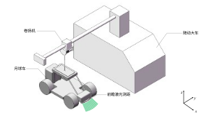
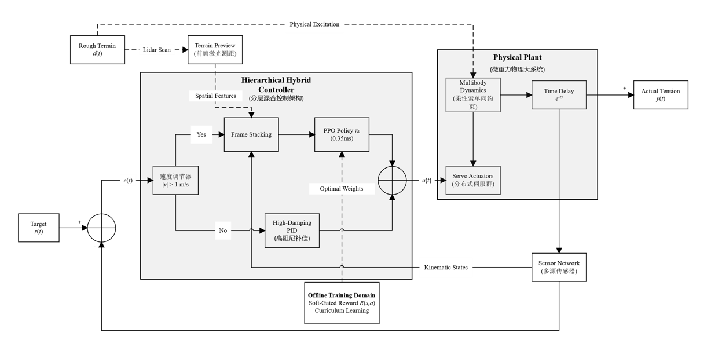

针对月球车微重力测试设施的空间受限难题，提出移动跟随式主动悬吊方案， 以 PPO 深度强化学习攻克柔性索单向受力、多体耦合及物理大时滞导致的控制失效。
月球 1/6g 低重力环境与松软崎岖月壤深刻改变巡视器轮地力学特性， 地面高保真微重力等效实验环境至关重要。然而，现有方案存在双重瓶颈：
传统固定龙门式多索悬吊、气浮混合平台受限于静态物理边界， 无法满足巡视器大范围、全地形的长距离机动测试需求。泛用性低、成本高。
PID 缺乏前瞻补偿，地形突变时易因滞后响应引发破坏性冲击载荷； MPC 在线求解耗时高昂，受限于车载底层算力。现有弥补方案反而加剧系统耦合风险。
需要一种融合地形前瞻感知与深度强化学习的控制架构，在大跨度移动跟随式主动悬吊系统中 实现毫秒级在线推理与时滞前瞻补偿。

大车跟随小车实现移动跟随式悬吊 · 激光测距获取前方路面信息实现前瞻
高刚度 · 大时滞 · 非线性耦合 · 欠驱动 → 传统控制面临多维物理硬约束

反馈通路保障底层闭环稳定性 · 前馈通路赋予智能体环境预判能力以实现主动补偿
采用物理优先级软门控奖励函数：张力误差（首要）→ 姿态稳定（次要）→ 动作平滑（辅助）。 多目标加权引导智能体在高刚度大时滞约束下自主学习最优补偿策略。
"时滞-地形"二维课程学习。从低时滞平坦地形逐步过渡至高时滞崎岖地形， 使模型分阶段习得从基础力控到高阶前瞻补偿的完整能力栈。
向策略网络输入多帧历史状态，使 PPO 在可观测量中隐式重建系统动力学， 从而在通讯延迟条件下保持稳定的前瞻预测能力。
基准模型（无抗时滞）→ 最终模型（综合鲁棒）。逐步引入时滞扰动和地形复杂度， 使策略网络逐层构建抗干扰与前瞻补偿能力。
| 维度 | 指标 | 含义 |
|---|---|---|
| 可行性 | 成功率 | 任务是否完成（无崩溃/失稳），最终模型达 96%–100% |
| 准确性 | 均方根误差 (RMSE) | 动态张力跟随精度，大幅优于 PID/MPC 基线 |
| 安全性 | 截断方差 | 排除极端工况后的稳态控制质量 |
| 稳定性 | 方差 | 全工况下的输出一致性 |
| 对比维度 | PID | 基准模型 (无前瞻) | 最终模型 (本架构) |
|---|---|---|---|
| 控制范式 | 反馈式 | 反馈式 | 前瞻反馈式 + 主动补偿 |
| 时滞适应性 | 大时滞下失稳 | 趋势与 PID 相似 | 大时滞下稳定跟随 |
| 单步推理耗时 | — | — | < 1 ms（PPO 绝对算力优势） |
| 动态张力跟随误差 | 大时滞下严重超标 | 大时滞下较大 | 严格约束在 ±15% 以内 |
| 任务存活率 | 低 | 中 | 100% |
PPO 智能体在崎岖地形中实时跟随月球车，动态维持悬吊张力稳定
光滑平地匀速行驶中突遇速度阶跃变化，前瞻短时失效。 最终模型快速恢复稳定张力跟随，未出现破坏性冲击。
崎岖地形中激光前瞻测距短暂失效。模型凭借历史状态堆叠的隐式动力学记忆 维持控制连续性，在感知恢复后无缝重接。
仅在单一基准速度训练，却能无缝迁移至更低和更高的速度范围。 包括正弦变速工况，展示出对动态速度剖面的鲁棒跟随能力。
仅在有限坡度范围内训练，却能泛化至未经训练的坡度域。 输出拉力稳定在 ±15% 动态精度边界内。
研究发现 RL 智能体在变阻尼物理场中呈现非对称泛化特性： 速度域与阻尼域的泛化行为截然不同，揭示了深度 RL 在物理系统中的独特迁移规律。
| 现象 | 速度域泛化 | 阻尼域泛化 |
|---|---|---|
| 误差趋势 | 低速工况误差急剧增大，高速工况增长缓慢 | 误差随阻尼降低单调增大（训练于中高阻尼域） |
| 根本原因 | 低速下模型将高频噪声误判为状态偏移，输出过度补偿动作（抖振） | 低阻尼下系统呈现欠阻尼振荡，动力学特征更丰富，策略需更强鲁棒性 |
| 工程意义 | ✅ 中高阻尼域训练 → 低阻尼域无损泛化：无需全参数空间均匀采样，大幅降低训练成本 | |
基于泛化机理发现，提出分层控制架构：
为验证从数字孪生到物理实机的跨域迁移，构建了微缩在环验证平台：
核心边缘算力与通信中枢，用于 RL 策略实时推理。 验证低功耗边缘设备上毫秒级高频推理的可行性。
移动悬吊母车，支持 ROS2 通信。搭载具备高频力矩控制的电机， 用于等效真实卷扬机系统。
高精度力控电机，模拟柔性索系的高频时变动力学特征。 暴露真实物理系统中的非线性静摩擦与电机死区。
微型 ROS2 小车作为可控运动环境，模拟巡视器在崎岖地形上的动态行为。 提供真实传感器噪声与通信抖动环境。
Sim-to-Real 核心挑战：虚拟仿真无噪声、无非线性机电特征、无未建模扰动 → 真实装备面临低功耗边缘算力约束 + 伺服非线性 + 传感噪声 + 通信抖动的多重考验。
在 23 kg 母车 + 2 kg ROS2 小车的微缩平台上完成从数字孪生到物理实机的跨域迁移验证。
基于微缩台架验证结论，将策略网络零样本部署至真实航天装备，验证极限功率与工程可行性。
为载人登月与月球科研站的地面全物理仿真提供理论依据与工程参考。
在完成性能验证后，顺手对训练好的 PPO 策略网络进行了一轮简单的对抗攻击测试， 结果有些意外：
这一发现与深度学习模型普遍存在的对抗脆弱性一致——RL 策略网络本质上是深度神经网络， 在高维输入空间中存在大量"盲点"，特定方向的微小扰动即可诱导策略崩溃。
这对安全攸关的航天应用尤为关键：月面真实环境中充满未知传感器噪声、 电磁干扰与未建模动力学，RL 策略是否能在长期运行中保持鲁棒，值得深入探索。